所有支持文章的结果都整合在这一页
无需在多个页面之间切换。每个图都包含科学逻辑、主要证据、独立重复、边界、图件和当前 authority；大表格在各自区域内滚动。
从分子坐标到实验设计的一条连续证据链
七张图不是七个互不相关的 benchmark。前一张图建立下一步所需的证据 contract；负结果和 blocked 状态也保留，用来阻止后续过度解释。
图1 — 哪一种分子坐标真正可读？
在同一套 held-biological-unit 切分下，分开比较离散身份、连续分子状态、空间位置与结构背景。
功能可读性是分层且依赖数据集的：连续分子状态可以在 identity 之外提供增量，但有些系统主要由空间或结构坐标主导。
不主张“genes 总是获胜”；session-held MICRONS 不是 cross-animal 分子证据；不同指标不会被压成一个总分。
审稿级审计 · 2026-10-05 — 以生物学个体为推断单位
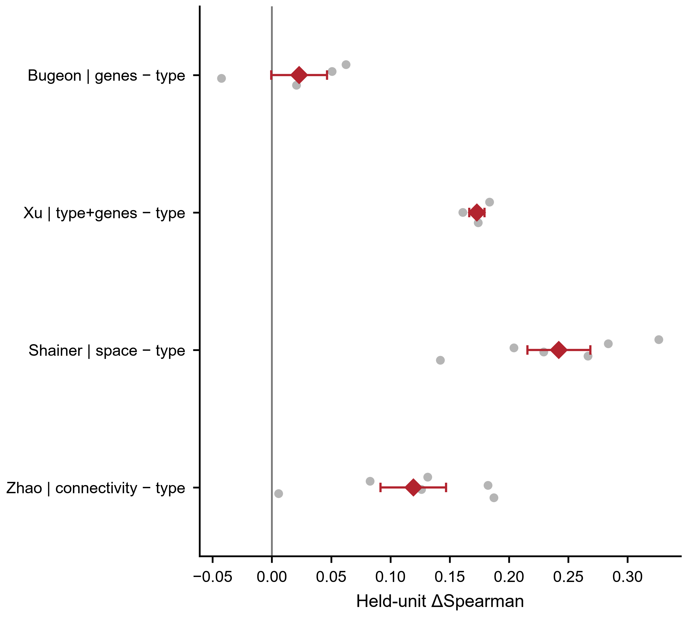
Shainer 提供目前最干净的个体级 context gain；Xu 方向一致但 n 很小；Bugeon genes 的绝对可读性不错（held-mouse Spearman≈0.396），但相对 type 的增量很弱。
Zhao 支持的是相对结构信息增量，而不是强绝对预测。C. elegans 的重复 identity 与 Allen VC2P 的 Cre-line one-hot 不再计作独立的连续分子重复。
图与结果
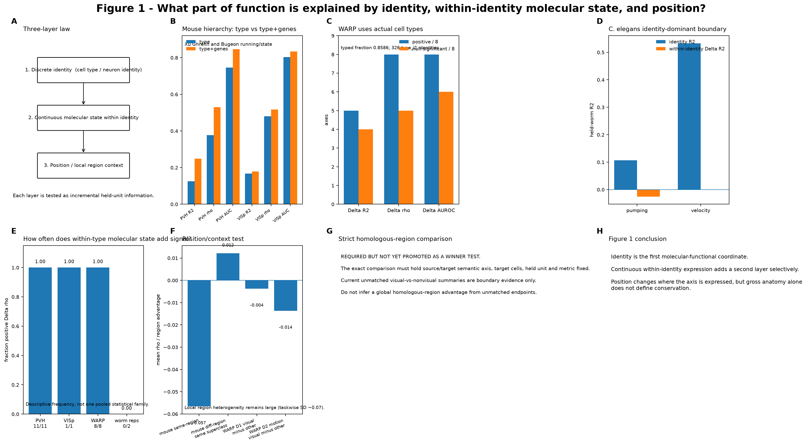
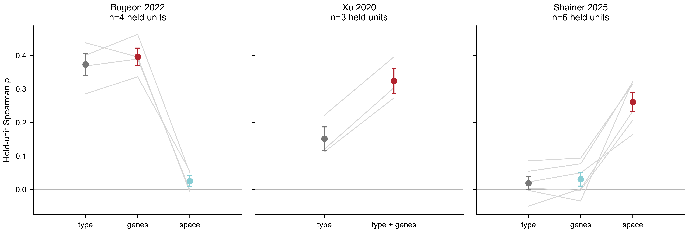
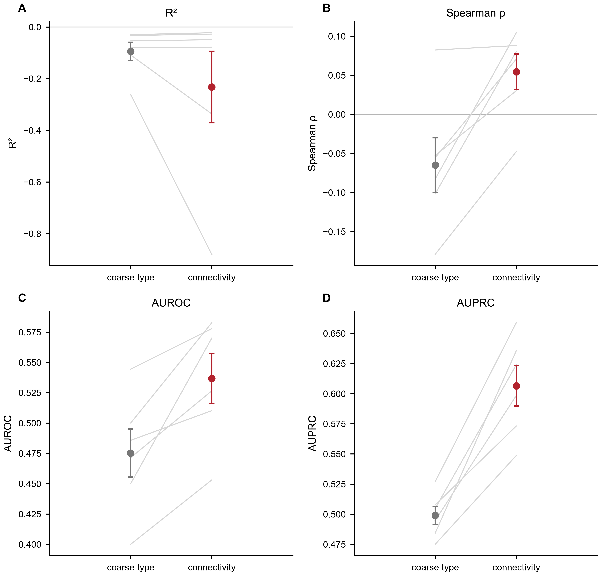
当前坐标证据
| dataset | feature_or_model | r2 | spearman | auroc | auprc | nrmse | ||||||||||||||||||||||||||||||||||||||||||||||||||||||||||||||||||||||||||||||||||||||||||||
|---|---|---|---|---|---|---|---|---|---|---|---|---|---|---|---|---|---|---|---|---|---|---|---|---|---|---|---|---|---|---|---|---|---|---|---|---|---|---|---|---|---|---|---|---|---|---|---|---|---|---|---|---|---|---|---|---|---|---|---|---|---|---|---|---|---|---|---|---|---|---|---|---|---|---|---|---|---|---|---|---|---|---|---|---|---|---|---|---|---|---|---|---|---|---|---|---|---|---|
| bugeon2022 | all_coordinates | -0.1514 | 0.3714 | 0.7359 | 0.7318 | 1.060 | ||||||||||||||||||||||||||||||||||||||||||||||||||||||||||||||||||||||||||||||||||||||||||||
| bugeon2022 | genes | -0.1121 | 0.3962 | 0.7494 | 0.7347 | 1.041 | ||||||||||||||||||||||||||||||||||||||||||||||||||||||||||||||||||||||||||||||||||||||||||||
| bugeon2022 | genes+space | -0.1142 | 0.3973 | 0.7505 | 0.7379 | 1.043 | ||||||||||||||||||||||||||||||||||||||||||||||||||||||||||||||||||||||||||||||||||||||||||||
| bugeon2022 | space | -0.1752 | 0.0244 | 0.4935 | 0.5325 | 1.079 | ||||||||||||||||||||||||||||||||||||||||||||||||||||||||||||||||||||||||||||||||||||||||||||
| bugeon2022 | type | -0.0954 | 0.3732 | 0.7289 | 0.6947 | 1.033 | ||||||||||||||||||||||||||||||||||||||||||||||||||||||||||||||||||||||||||||||||||||||||||||
| bugeon2022 | type+genes | -0.1348 | 0.3748 | 0.7365 | 0.7299 | 1.051 | ||||||||||||||||||||||||||||||||||||||||||||||||||||||||||||||||||||||||||||||||||||||||||||
| Preview: 6 of 44 rows shown here. Download the complete CSV from the figure header above. | ||||||||||||||||||||||||||||||||||||||||||||||||||||||||||||||||||||||||||||||||||||||||||||||||||
预定义比较：同一 held-unit 下的比较
| dataset | question | evidence_axis | delta_r2 | delta_pearson | delta_spearman | delta_nrmse | delta_auroc | delta_auprc | interpretation |
|---|---|---|---|---|---|---|---|---|---|
| zhao2026 | connectivity vs type | coordinate_prediction | 0.001145 | 0.0945 | 0.1269 | 0.0004227 | 0.0660 | 0.1072 | positive delta means candidate carries more held-unit functional information on that metric |
| bugeon2022 | genes vs type | coordinate_prediction | -0.0168 | 0.0258 | 0.0229 | -0.007987 | 0.0205 | 0.0400 | positive delta means candidate carries more held-unit functional information on that metric |
| bugeon2022 | genes+space vs type | coordinate_prediction | -0.0188 | 0.0253 | 0.0241 | -0.009144 | 0.0216 | 0.0432 | positive delta means candidate carries more held-unit functional information on that metric |
| xu2020 | genes vs type | coordinate_prediction | 0.0907 | 0.1563 | 0.1699 | 0.0461 | 0.1124 | 0.1352 | positive delta means candidate carries more held-unit functional information on that metric |
| shainer2025 | space vs type | coordinate_prediction | 0.0564 | 0.2421 | 0.0291 | 0.1656 | 0.1761 | positive delta means candidate carries more held-unit functional information on that metric |
Other Fig1 evidence axes
Relation / AIC / effect-size 与其他 authority 结果
| dataset | evidence_axis | contract | feature_or_model | target | status | n_held_units | r2 | pearson | spearman | nrmse | auroc | auprc | brier | delta_r2_vs_type | delta_pearson_vs_type | delta_spearman_vs_type | delta_nrmse_vs_type | delta_auroc_vs_type | delta_auprc_vs_type | delta_brier_vs_type | relation_index | p_value | q_value | delta_aic_type_minus_gene | companion_r2 | rank_biserial | held_direction_consistency | |||||||||||||||||||||||||||||||||||||||||||||||||||||||||||||||||||||||
|---|---|---|---|---|---|---|---|---|---|---|---|---|---|---|---|---|---|---|---|---|---|---|---|---|---|---|---|---|---|---|---|---|---|---|---|---|---|---|---|---|---|---|---|---|---|---|---|---|---|---|---|---|---|---|---|---|---|---|---|---|---|---|---|---|---|---|---|---|---|---|---|---|---|---|---|---|---|---|---|---|---|---|---|---|---|---|---|---|---|---|---|---|---|---|---|---|---|---|
| allen_vc2p | relation_index | DG_assay_cohort | type_l2 | FDR_SUPPORTED | 256.0 | 0.0251 | 0.0002 | 0.0008284 | ||||||||||||||||||||||||||||||||||||||||||||||||||||||||||||||||||||||||||||||||||||||||||
| allen_vc2p | relation_index | NS_assay_cohort | type_l2 | FDR_SUPPORTED | 256.0 | 0.0547 | 0.0002 | 0.0008284 | ||||||||||||||||||||||||||||||||||||||||||||||||||||||||||||||||||||||||||||||||||||||||||
| allen_vc2p | relation_index | SG_assay_cohort | type_l2 | FDR_SUPPORTED | 256.0 | 0.0167 | 0.0002 | 0.0008284 | ||||||||||||||||||||||||||||||||||||||||||||||||||||||||||||||||||||||||||||||||||||||||||
| bugeon2022 | relation_index | standardized_scalar_multivariate | type_l1 | feat__pupil_r;feat__speed_r;feat__mean_activity | NOT_FDR_SUPPORTED | 4.000 | 0.0536 | 0.7922 | 0.9257 | |||||||||||||||||||||||||||||||||||||||||||||||||||||||||||||||||||||||||||||||||||||||||
| bugeon2022 | relation_index | standardized_scalar_multivariate | type_l2 | feat__pupil_r;feat__speed_r;feat__mean_activity | FDR_SUPPORTED | 4.000 | 0.1119 | 0.0003999 | 0.00145 | |||||||||||||||||||||||||||||||||||||||||||||||||||||||||||||||||||||||||||||||||||||||||
| bugeon2022 | relation_index | standardized_scalar_multivariate | type_l3 | feat__pupil_r;feat__speed_r;feat__mean_activity | NOT_FDR_SUPPORTED | 4.000 | 0.0405 | 0.5145 | 0.7436 | |||||||||||||||||||||||||||||||||||||||||||||||||||||||||||||||||||||||||||||||||||||||||
| Preview: 6 of 76 rows shown here. Download the complete CSV from the figure header above. | ||||||||||||||||||||||||||||||||||||||||||||||||||||||||||||||||||||||||||||||||||||||||||||||||||
文章角色、支持证据与边界
| dataset | placement | article_role | strongest_valid_result | boundary_or_caveat |
|---|---|---|---|---|
| allen_visual_learning_hcr | ED / tool main | visual-learning identity/response-law independent replication and full Fig1-to-Fig7 demonstration | Fig1-3 relation/panel evidence is strong; Fig4 completion is saturated; 15-gene held-mouse operator is amplitude-ready (R2 about 0.156, Spearman about 0.357, AUROC about 0.742); Fig7 produces 44,133 perturbation-context conditions across 23 contexts. HCR-to-Zhao visual-evoked transfer is negative on target evaluation. | Fig4 is not a BehLift positive; Fig6 visual-evoked transfer to Zhao is a negative boundary; Fig7 is prospective ranking only. |
| microns | ED / tool boundary | session-held structural/function geometry stress test with correct molecular-stage N/A routing | 24,713 EM neurons; session-held space and RF geometry are predictive, but there is no transcriptomic gene block and only one animal. | Never call session-held results cross-animal; molecular Fig2/3/5/6/7 are scientifically N/A. |
| mclachlan2025 | ED / tool acceptance | independent PERI/ECT integration test carried through Fig5 with biology-aware semantic de-duplication | Fig2 PERI/ECT AtlasLift improves global geometry; Fig4 uses one primary dAIC coordinate per biological axis and remains mixed; Fig5 held-animal operator fails prospective readiness; Fig6/7 stop correctly. | Same-axis median/early/late/slope summaries must not be treated as independent functions; no semantic Fig6 transfer is invented. |
图2 — 什么时候能够可靠恢复缺失的分子状态？
先审计参考图谱是否合格，再检验具体功能端点是否改善，最后才问 held-unit 的功能几何是否真的被恢复。
AtlasLift 只在匹配的 regime 下得到支持：WARP 与 exact PERI/ECT 是较强的 held-unit 例子；exact-region reference 能减少虚假的乐观结果。
reference 自身恢复得好并不是功能证据。即使 mapping 或 endpoint recovery 有用，Bugeon/Shainer/Condylis 的 geometry boundary 仍然保留。
审稿级审计 · 2026-10-05 — 匹配参考图谱与功能端点检验
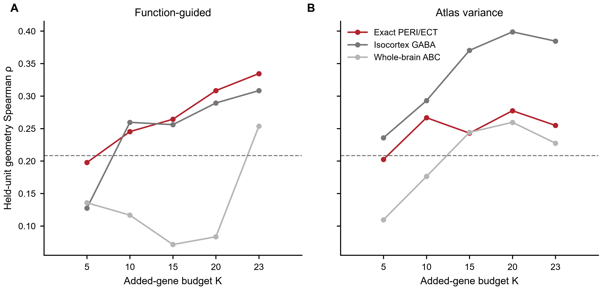
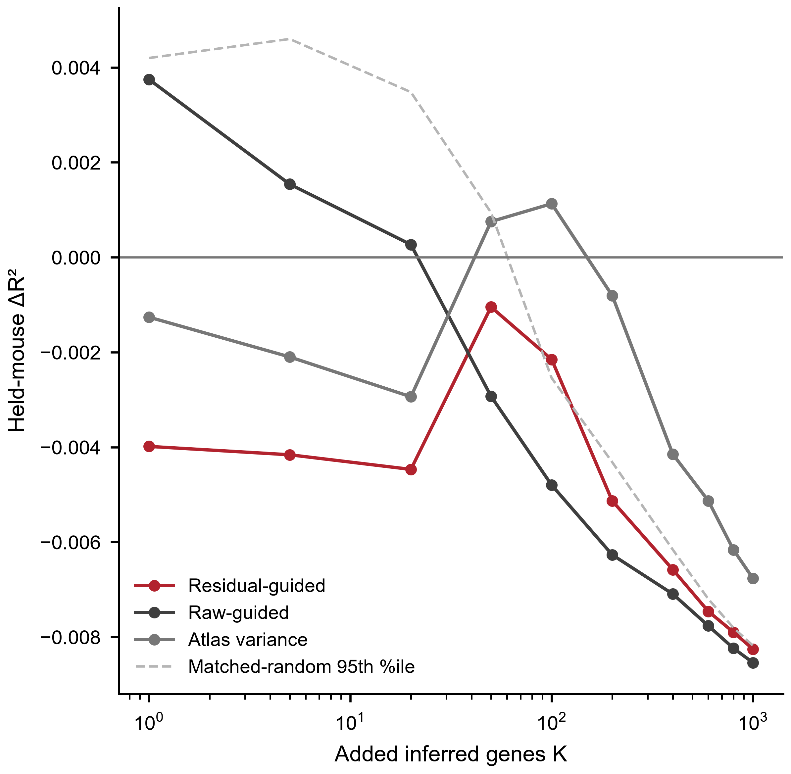
参考图谱的解剖匹配很重要：在 matched-K 比较下，exact PERI/ECT 能产生可重复的 function-guided 几何增益。
Xu/PVH external PVN 不再被当作“还没调好”的结果。隐藏基因恢复与下游功能增益是两个不同命题；严格 endpoint 检验目前不支持功能增益。
图与结果
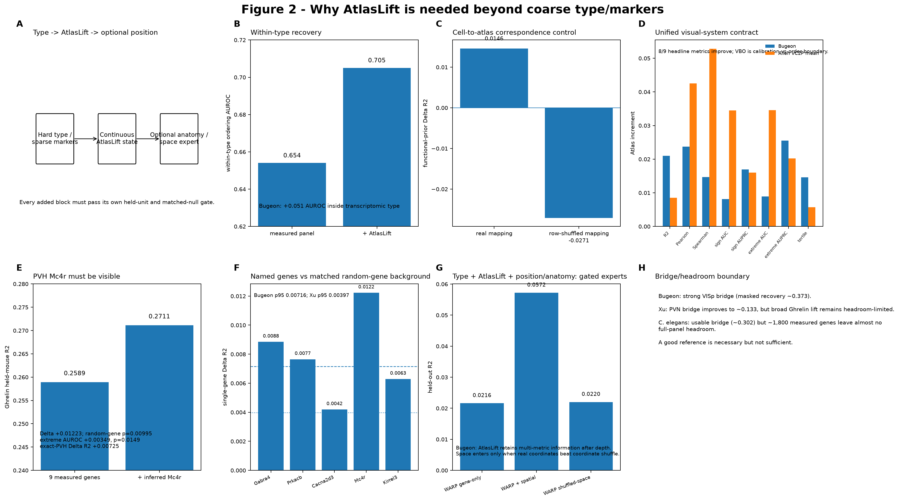
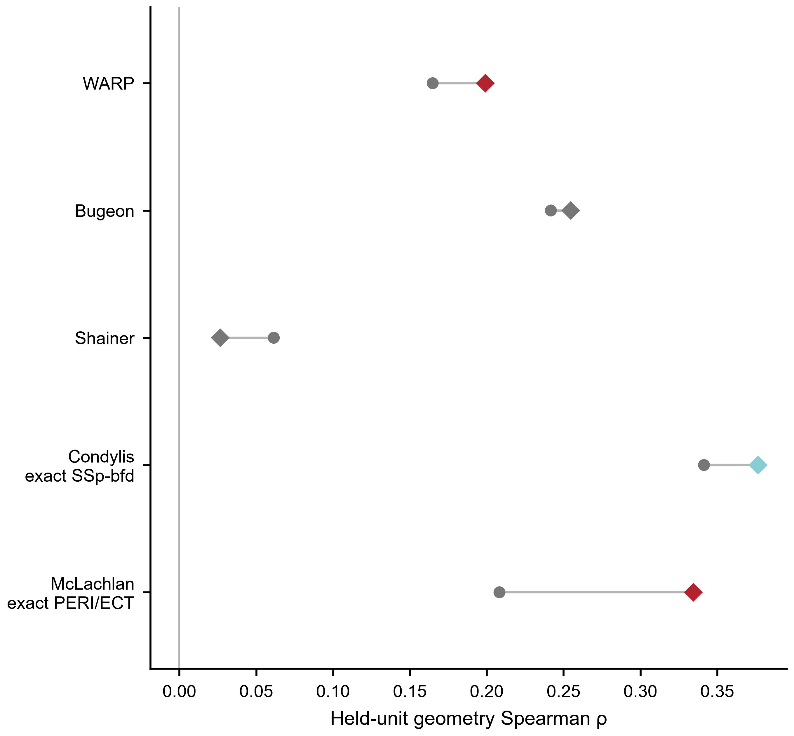
参考图谱资格审计
| dataset | run | reference | quality_flag | overlap_genes | overlap_fraction | geometry_rho | geometry_null_p | recovery_mean_rho | recovery_null_p | mapping_stability |
|---|---|---|---|---|---|---|---|---|---|---|
| results\fig47_core_inputs_20261002\bugeon2022.parquet | bugeon_visp_atlasflow_v2 | mouse_visp_exact | HIGH | 70.000 | 0.9722 | 0.3032 | 0.0196 | 0.2984 | 0.0476 | 0.8999 |
| results\fig47_core_inputs_20261002\condylis2022.parquet | condylis_ssp_atlasflow_v2 | mouse_ssp_bfd_exact | GOOD | 6.000 | 1.000 | -0.1321 | 0.6471 | 0.2211 | 0.0476 | 0.8355 |
| results\fig13_extended_inputs_20261003\mclachlan2025.parquet | mclachlan_periect_atlasflow_v2 | mouse_peri_ect_exact | GOOD | 22.000 | 0.9565 | 0.0197 | 0.3725 | 0.0378 | 0.0476 | 0.7707 |
| results\fig47_core_inputs_20261002\shainer2025.parquet | shainer_tectum_atlasflow_v2 | zebrafish_gse158_8dpf | GOOD | 9.000 | 1.000 | -0.0927 | 0.8824 | 0.1468 | 0.0476 | 0.7325 |
| results\fig47_core_inputs_20261002\xu2020.parquet | xu_pvh_atlasflow_v2 | mouse_pvn_berkhout_external | GOOD | 9.000 | 1.000 | 0.1902 | 0.1569 | 0.0979 | 0.0476 | 0.8074 |
| results\fig47_core_inputs_20261002\zhao2026.parquet | zhao_visp_atlasflow_v2 | mouse_visp_exact | GOOD | 29.000 | 0.9667 | 0.0714 | 0.1373 | 0.0469 | 0.0476 | 0.8249 |
Held-unit 几何与恢复
| dataset | reference_contract | K | method | mean_baseline_rho | mean_heldout_rho | mean_delta_rho | median_delta_rho | folds_improved | folds_above_random_p95 | n_folds | wilcoxon_p_one_sided | random_global_null_mean | random_global_null_p95 | random_global_p | random_global_q_bh | wilcoxon_q_bh | support_status | endpoint_contract | selector | baseline_rho | lifted_rho | delta_rho | random_p | random_q | status | interpretation | ||||||||||||||||||||||||||||||||||||||||||||||||||||||||||||||||||||||||
|---|---|---|---|---|---|---|---|---|---|---|---|---|---|---|---|---|---|---|---|---|---|---|---|---|---|---|---|---|---|---|---|---|---|---|---|---|---|---|---|---|---|---|---|---|---|---|---|---|---|---|---|---|---|---|---|---|---|---|---|---|---|---|---|---|---|---|---|---|---|---|---|---|---|---|---|---|---|---|---|---|---|---|---|---|---|---|---|---|---|---|---|---|---|---|---|---|---|---|
| bugeon2022 | VISp_exact_1137states | 3.000 | atlas_variance | 0.2450 | 0.2410 | -0.004008 | -0.0131 | 1.000 | 1.000 | 4.000 | 0.6875 | 0.2413 | 0.2550 | 0.5105 | 0.6531 | 0.7857 | NOT_SUPPORTED | |||||||||||||||||||||||||||||||||||||||||||||||||||||||||||||||||||||||||||||||||
| bugeon2022 | VISp_exact_1137states | 3.000 | function_geometry | 0.2450 | 0.2453 | 0.0003262 | 0.001049 | 2.000 | 0 | 4.000 | 0.5625 | 0.2413 | 0.2550 | 0.3097 | 0.6194 | 0.7857 | NOT_SUPPORTED | |||||||||||||||||||||||||||||||||||||||||||||||||||||||||||||||||||||||||||||||||
| bugeon2022 | VISp_exact_1137states | 5.000 | atlas_variance | 0.2450 | 0.2399 | -0.005069 | -0.0185 | 1.000 | 1.000 | 4.000 | 0.6875 | 0.2418 | 0.2587 | 0.5714 | 0.6531 | 0.7857 | NOT_SUPPORTED | |||||||||||||||||||||||||||||||||||||||||||||||||||||||||||||||||||||||||||||||||
| bugeon2022 | VISp_exact_1137states | 5.000 | function_geometry | 0.2450 | 0.2419 | -0.003131 | -0.001154 | 2.000 | 0 | 4.000 | 0.6875 | 0.2418 | 0.2587 | 0.4845 | 0.6531 | 0.7857 | NOT_SUPPORTED | |||||||||||||||||||||||||||||||||||||||||||||||||||||||||||||||||||||||||||||||||
| bugeon2022 | VISp_exact_1137states | 10.000 | atlas_variance | 0.2450 | 0.2547 | 0.009696 | -0.006061 | 1.000 | 1.000 | 4.000 | 0.6875 | 0.2434 | 0.2649 | 0.1718 | 0.6194 | 0.7857 | NOT_SUPPORTED | |||||||||||||||||||||||||||||||||||||||||||||||||||||||||||||||||||||||||||||||||
| bugeon2022 | VISp_exact_1137states | 10.000 | function_geometry | 0.2450 | 0.2502 | 0.005184 | 0.004776 | 2.000 | 1.000 | 4.000 | 0.3125 | 0.2434 | 0.2649 | 0.2927 | 0.6194 | 0.7857 | NOT_SUPPORTED | |||||||||||||||||||||||||||||||||||||||||||||||||||||||||||||||||||||||||||||||||
| Preview: 6 of 18 rows shown here. Download the complete CSV from the figure header above. | ||||||||||||||||||||||||||||||||||||||||||||||||||||||||||||||||||||||||||||||||||||||||||||||||||
端点级 AtlasFlow 多指标结果
Open full endpoint authority
| dataset | target | model | block | n_core_metrics_present | n_core_metrics_positive | positive_metric_fraction | min_held_coverage | mean_held_direction_consistency | max_held_units | delta_r2 | held_positive_fraction_r2 | n_held_r2 | delta_pearson | held_positive_fraction_pearson | n_held_pearson | delta_spearman | held_positive_fraction_spearman | n_held_spearman | delta_nrmse | held_positive_fraction_nrmse | n_held_nrmse | delta_auroc | held_positive_fraction_auroc | n_held_auroc | delta_auprc | held_positive_fraction_auprc | n_held_auprc | delta_brier | held_positive_fraction_brier | n_held_brier | ||||||||||||||||||||||||||||||||||||||||||||||||||||||||||||||||||||
|---|---|---|---|---|---|---|---|---|---|---|---|---|---|---|---|---|---|---|---|---|---|---|---|---|---|---|---|---|---|---|---|---|---|---|---|---|---|---|---|---|---|---|---|---|---|---|---|---|---|---|---|---|---|---|---|---|---|---|---|---|---|---|---|---|---|---|---|---|---|---|---|---|---|---|---|---|---|---|---|---|---|---|---|---|---|---|---|---|---|---|---|---|---|---|---|---|---|---|
| zhao2026 | resp__checkerboard__b00 | Ridge | atlas | 7.000 | 7.000 | 1.000 | 1.000 | 0.9048 | 6.000 | 0.0009753 | 1.000 | 6.000 | 0.0940 | 0.8333 | 6.000 | 0.2126 | 1.000 | 6.000 | 0.0004786 | 1.000 | 6.000 | 0.1503 | 1.000 | 6.000 | 0.1325 | 0.8333 | 6.000 | 3.789e-05 | 0.6667 | 6.000 | ||||||||||||||||||||||||||||||||||||||||||||||||||||||||||||||||||||
| zhao2026 | resp__checkerboard__b00 | Ridge | measured+atlas | 7.000 | 7.000 | 1.000 | 1.000 | 0.9048 | 6.000 | 0.0009153 | 1.000 | 6.000 | 0.0805 | 0.8333 | 6.000 | 0.2058 | 1.000 | 6.000 | 0.0004493 | 1.000 | 6.000 | 0.1630 | 1.000 | 6.000 | 0.1287 | 0.8333 | 6.000 | 4.901e-05 | 0.6667 | 6.000 | ||||||||||||||||||||||||||||||||||||||||||||||||||||||||||||||||||||
| xu2020 | resp__Eat-Hed__b15 | Lasso | measured+atlas | 7.000 | 7.000 | 1.000 | 1.000 | 0.9048 | 3.000 | 0.0140 | 1.000 | 3.000 | 0.0120 | 0.6667 | 3.000 | 0.0255 | 0.6667 | 3.000 | 0.007206 | 1.000 | 3.000 | 0.0258 | 1.000 | 3.000 | 0.0174 | 1.000 | 3.000 | 0.002086 | 1.000 | 3.000 | ||||||||||||||||||||||||||||||||||||||||||||||||||||||||||||||||||||
| zhao2026 | resp__checkerboard__b04 | PLS | atlas | 7.000 | 7.000 | 1.000 | 1.000 | 0.8810 | 6.000 | 4.819 | 0.8333 | 6.000 | 0.1456 | 0.6667 | 6.000 | 0.2259 | 1.000 | 6.000 | 0.8214 | 0.8333 | 6.000 | 0.1415 | 1.000 | 6.000 | 0.0772 | 0.8333 | 6.000 | 0.0392 | 1.000 | 6.000 | ||||||||||||||||||||||||||||||||||||||||||||||||||||||||||||||||||||
| zhao2026 | resp__checkerboard__b10 | Lasso | atlas | 5.000 | 5.000 | 1.000 | 1.000 | 0.8667 | 6.000 | 0.0719 | 0.8333 | 6.000 | 0 | 0 | 0.0326 | 0.8333 | 6.000 | 0.1242 | 0.8333 | 6.000 | 0.1981 | 1.000 | 6.000 | 0.002489 | 0.8333 | 6.000 | ||||||||||||||||||||||||||||||||||||||||||||||||||||||||||||||||||||||||
| shainer2025 | feat__rs_dimmax | PLS | atlas | 7.000 | 7.000 | 1.000 | 1.000 | 0.8333 | 6.000 | 0.0223 | 1.000 | 6.000 | 0.0290 | 0.8333 | 6.000 | 0.0125 | 0.6667 | 6.000 | 0.0102 | 1.000 | 6.000 | 0.0202 | 0.6667 | 6.000 | 0.0144 | 0.6667 | 6.000 | 0.0005441 | 1.000 | 6.000 | ||||||||||||||||||||||||||||||||||||||||||||||||||||||||||||||||||||
| Preview: 6 of 504 rows shown here. Download the complete CSV from the figure header above. | ||||||||||||||||||||||||||||||||||||||||||||||||||||||||||||||||||||||||||||||||||||||||||||||||||
文章角色、支持证据与边界
| dataset | placement | article_role | strongest_valid_result | boundary_or_caveat |
|---|---|---|---|---|
| mclachlan2025 | ED / tool acceptance | independent PERI/ECT integration test carried through Fig5 with biology-aware semantic de-duplication | Fig2 PERI/ECT AtlasLift improves global geometry; Fig4 uses one primary dAIC coordinate per biological axis and remains mixed; Fig5 held-animal operator fails prospective readiness; Fig6/7 stop correctly. | Same-axis median/early/late/slope summaries must not be treated as independent functions; no semantic Fig6 transfer is invented. |
图3 — 一个紧凑 assay 到底应该测什么？
严格区分已测 panel 压缩、真正的隐藏基因替代、前瞻性 marker 提名以及跨数据集重复。
紧凑分子测量可以保留有用的功能结构，但“最佳 panel”取决于优化目标与证据层级。
Compression 不等于 replacement；前瞻性 atlas nomination 不等于 measured hidden-gene validation；M1 provenance 已闭环；fixed-budget 竞争力也不等于方法普遍优越。
审稿级审计 · 2026-10-05 — assay 设计的实证边界
主 benchmark 为 Scala 等人的 M1 Patch-seq：1,213 cells、1,000 measured genes、16 个 electrophysiology targets，并用 10 个 held-mouse folds 评估。K=25 时，FSO functional selection 的 joint R²≈0.3686，PERSIST≈0.3266，random-p95≈0.2459；sBNN≈0.3691，基本并列。这里主张的是高效 functional-panel design，而不是 universal superiority。
Allen HCR K=5 是目前最强的 dataset-specific compact-panel 结果（6/6 held mice，P=0.015625，BH q=0.046875）。WARP K=5 为 3/3 同向，但 P=0.125。Xu 9→new9 与 Bugeon 72→new72 在 replacement genes 没有被原始 functional cells 实际测量时仍属于 prospective。
图与结果
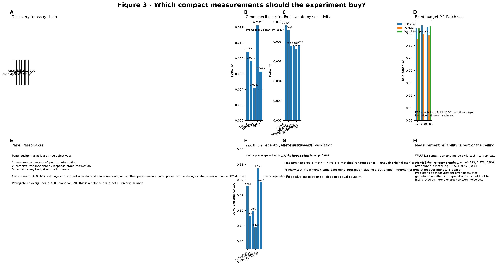
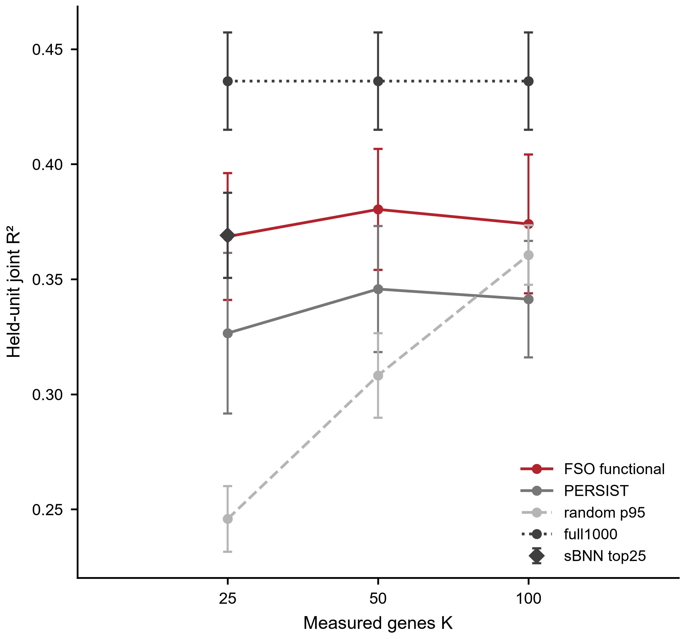
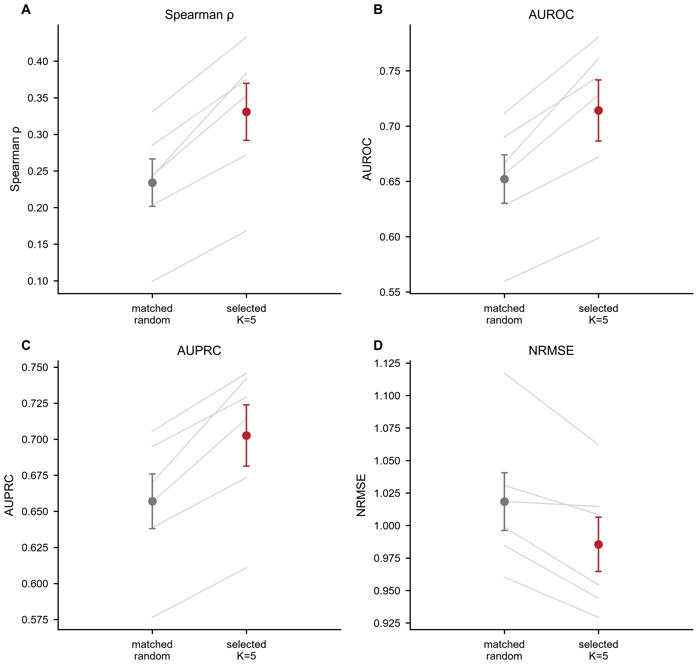
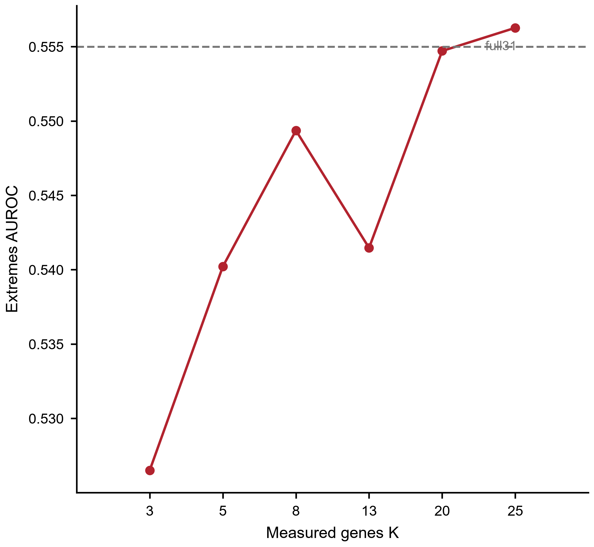
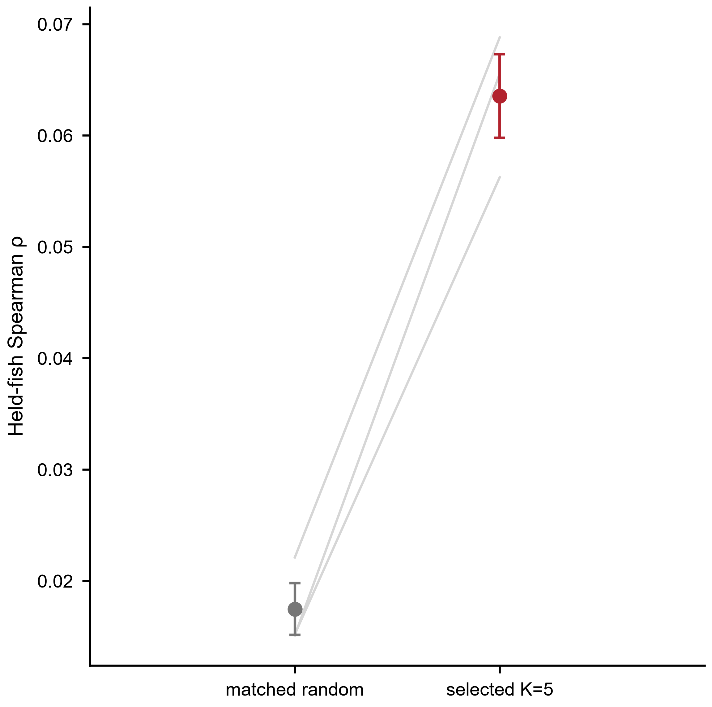
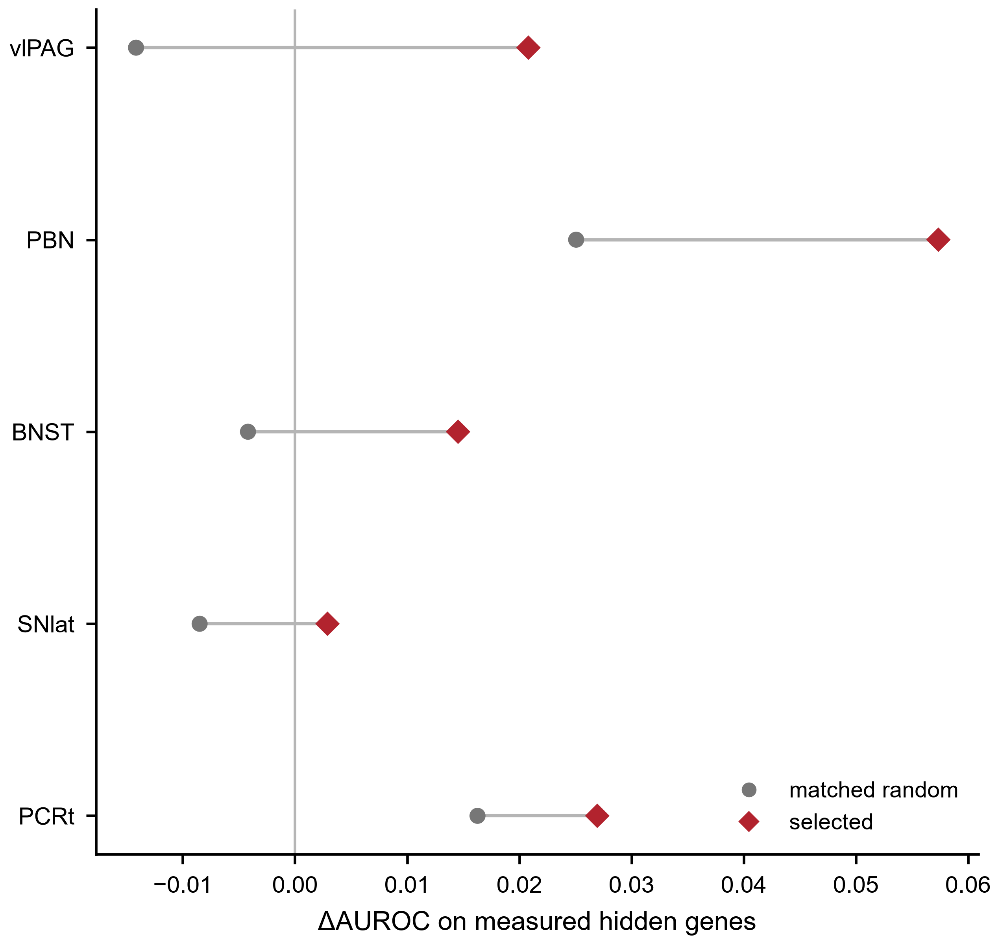
当前 Fig3 完整 authority
| dataset | evidence | K | method | primary_metric | value | companion_spearman | retained_full | delta_vs_PERSIST | delta_vs_random_p95 | status | target | matched_random | advantage_vs_random | companion_ap_advantage | companion_r2 | delta_auroc_vs_full31 | companion_shape_zf_r2 | pareto | hidden_gene_median_spearman | response_relation_index | agreement_q | recovery_q | relation_q | held_wins | n_held_units | p_value | q_value | |||||||||||||||||||||||||||||||||||||||||||||||||||||||||||||||||||||||
|---|---|---|---|---|---|---|---|---|---|---|---|---|---|---|---|---|---|---|---|---|---|---|---|---|---|---|---|---|---|---|---|---|---|---|---|---|---|---|---|---|---|---|---|---|---|---|---|---|---|---|---|---|---|---|---|---|---|---|---|---|---|---|---|---|---|---|---|---|---|---|---|---|---|---|---|---|---|---|---|---|---|---|---|---|---|---|---|---|---|---|---|---|---|---|---|---|---|---|
| M1 | fixed_budget_primary | 25.000 | FSO_functional | joint_r2 | 0.3686 | 0.5785 | 0.8451 | 0.0420 | 0.1227 | PRIMARY_BENCHMARK | ||||||||||||||||||||||||||||||||||||||||||||||||||||||||||||||||||||||||||||||||||||||||
| M1 | fixed_budget_primary | 25.000 | functional_topK | joint_r2 | 0.3341 | 0.5458 | 0.7661 | 0.007505 | 0.0882 | OBJECTIVE_DEPENDENT_COMPARATOR | ||||||||||||||||||||||||||||||||||||||||||||||||||||||||||||||||||||||||||||||||||||||||
| M1 | fixed_budget_primary | 50.000 | FSO_functional | joint_r2 | 0.3804 | 0.5883 | 0.8722 | 0.0346 | 0.0722 | PRIMARY_BENCHMARK | ||||||||||||||||||||||||||||||||||||||||||||||||||||||||||||||||||||||||||||||||||||||||
| M1 | fixed_budget_primary | 50.000 | functional_topK | joint_r2 | 0.3621 | 0.5745 | 0.8304 | 0.0164 | 0.0539 | OBJECTIVE_DEPENDENT_COMPARATOR | ||||||||||||||||||||||||||||||||||||||||||||||||||||||||||||||||||||||||||||||||||||||||
| M1 | fixed_budget_primary | 100.0 | FSO_functional | joint_r2 | 0.3740 | 0.5898 | 0.8577 | 0.0327 | 0.0135 | PRIMARY_BENCHMARK | ||||||||||||||||||||||||||||||||||||||||||||||||||||||||||||||||||||||||||||||||||||||||
| M1 | fixed_budget_primary | 100.0 | functional_topK | joint_r2 | 0.3773 | 0.5917 | 0.8651 | 0.0359 | 0.0167 | OBJECTIVE_DEPENDENT_COMPARATOR | ||||||||||||||||||||||||||||||||||||||||||||||||||||||||||||||||||||||||||||||||||||||||
| Preview: 6 of 53 rows shown here. Download the complete CSV from the figure header above. | ||||||||||||||||||||||||||||||||||||||||||||||||||||||||||||||||||||||||||||||||||||||||||||||||||
Evidence categories
8 authority rows
6 authority rows
5 authority rows
7 authority rows
6 authority rows
16 authority rows
5 authority rows
文章角色、支持证据与边界
| dataset | placement | article_role | strongest_valid_result | boundary_or_caveat |
|---|---|---|---|---|
| zhao2026 | Main Fig6 / ED tool | same-species transfer anchor and trimodal stress-test; native function/projection amplitude boundary | Frozen Zhao->Bugeon transfer remains the Fig6 positive anchor. Native Zhao function completion is negative. Projection operator is amplitude-poor (Direct R2=-0.027; best shared R2=-0.013) but shared structure improves rank/AUC (delta Spearman=+0.122); projection relation q=0.329. | Do not convert relative rank/AUC improvement with negative absolute R2 into a projection-prediction success; HCR<->Zhao visual semantic transfer also remains negative. |
图4 — 分子可读的功能流形与条件补全
检验分子坐标是否组织功能流形，以及在其他功能已知后，分子信息能否对被省略行为提供独特增量。
C. elegans、Xu、Bugeon、Sorensen、WARP 与 Allen VC2P 展示了多种 molecularly organized function；最强结果取决于 headroom 与 representation。
全局 manifold 较弱并不会否定 selected-axis 上的强 completion。Condylis saturation、Zhao native negative completion、稀疏 marker 的 Shainer/Habenula 与非分子 NeuroPlex 仍作为边界保留。
图与结果
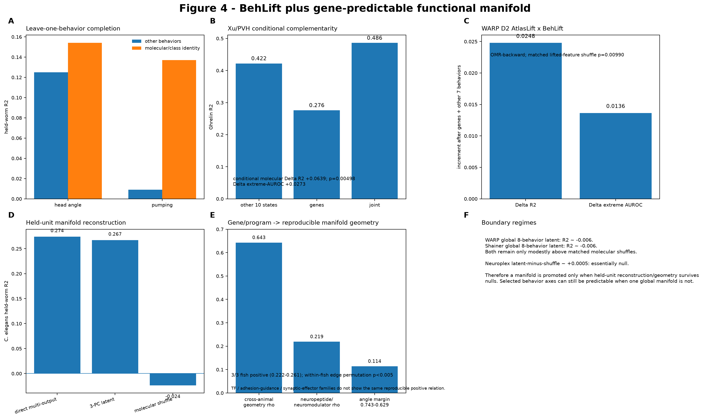
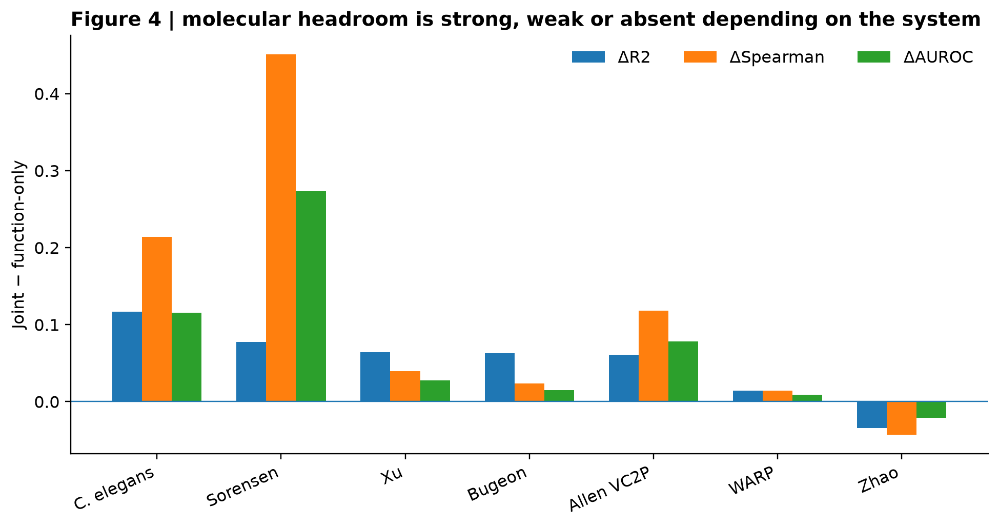
Scientific result lineage
| branch | scientific_question | dataset_or_scope | input | target | split_or_contract | headline_result | metrics | current_role | interpretation | |||||||||||||||||||||||||||||||||||||||||||||||||||||||||||||||||||||||||||||||||||||||||
|---|---|---|---|---|---|---|---|---|---|---|---|---|---|---|---|---|---|---|---|---|---|---|---|---|---|---|---|---|---|---|---|---|---|---|---|---|---|---|---|---|---|---|---|---|---|---|---|---|---|---|---|---|---|---|---|---|---|---|---|---|---|---|---|---|---|---|---|---|---|---|---|---|---|---|---|---|---|---|---|---|---|---|---|---|---|---|---|---|---|---|---|---|---|---|---|---|---|---|
| ManifoldLift | Can molecular identity/state predict a cell's position in a low-dimensional functional manifold? | C. elegans | identity+genes | train-derived functional latent manifold | held biological unit | latent R2=0.35894; latent rho=0.47158; reconstructed-battery R2=0.30518; recon rho=0.46865; distance rho=0.43711; KNN10 above chance=0.03561 | latent R2; latent rho; recon R2/rho; distance rho; KNN | core Fig4 manifold positive | Strongest normalized manifold reconstruction; 5/5 fold-level sign tests p=0.03125 for all reported manifold views. | |||||||||||||||||||||||||||||||||||||||||||||||||||||||||||||||||||||||||||||||||||||||||
| ManifoldLift | Can molecular identity/state predict a cell's position in a low-dimensional functional manifold? | Xu | genes | train-derived functional latent manifold | held animal | latent R2=0.07205; latent rho=0.18618; recon R2=0.02634; recon rho=0.32863; distance rho=0.17099 | latent R2; latent rho; recon R2/rho; distance rho; KNN | core/ED manifold support | Moderate molecular manifold readability; rank/topology stronger than exact latent amplitude. | |||||||||||||||||||||||||||||||||||||||||||||||||||||||||||||||||||||||||||||||||||||||||
| ManifoldLift | Can molecular identity/state predict a cell's position in a low-dimensional functional manifold? | WARP | identity+genes | train-derived static-summary functional latent manifold | held fish | latent R2=0.01587; latent rho=0.14799; recon R2=-0.00234; recon rho=0.13017; distance rho=0.08684 | latent R2; latent rho; recon R2/rho; distance rho; KNN | core/ED manifold support | Static exact reconstruction is weak but rank/topology positive; dynamic WARP geometry is a separate stronger result. | |||||||||||||||||||||||||||||||||||||||||||||||||||||||||||||||||||||||||||||||||||||||||
| ManifoldLift | Can molecular identity/state predict a cell's position in a low-dimensional functional manifold? | Shainer | identity+atlas | train-derived visual functional latent manifold | held fish | latent R2=-0.04880; latent rho=0.04207; recon R2=-0.04104; recon rho=0.02373; distance rho=0.03260 | latent R2; latent rho; recon R2/rho; distance rho; KNN | explicit manifold boundary | Sparse fish manifold is weak in exact amplitude; boundary retained. | |||||||||||||||||||||||||||||||||||||||||||||||||||||||||||||||||||||||||||||||||||||||||
| Manifold breadth | How broad is manifold evidence beyond the four normalized examples? | 10 systems | dataset-specific molecular/identity coordinates | functional manifold / local neighborhood / subspace | held biological unit where available | C. elegans; Bugeon; Xu; Allen VC2P; WARP; Shainer; Zhao; Condylis; Habenula; NeuroPlex | dataset-specific manifold/topology metrics | ED/evidence bank | Main normalized panel shows four systems, but completed evidence bank is 10-system broad. | |||||||||||||||||||||||||||||||||||||||||||||||||||||||||||||||||||||||||||||||||||||||||
| Local manifold geometry | Are local functional neighborhoods and within-type gradients molecularly organized? | Bugeon / Xu | genes and identity | local functional neighborhoods; within-type gradients | held-unit / within-type | completed positive evidence retained in evidence bank | local-neighborhood preservation; within-type gradients | ED/supporting | Supports molecular organization inside local functional manifolds even when a global scalar R2 is modest. | |||||||||||||||||||||||||||||||||||||||||||||||||||||||||||||||||||||||||||||||||||||||||
| Preview: 6 of 16 rows shown here. Download the complete CSV from the figure header above. | ||||||||||||||||||||||||||||||||||||||||||||||||||||||||||||||||||||||||||||||||||||||||||||||||||
Full multimetric Fig4 ledger
All held-unit Fig4 metric rows
| figure | dataset | stage | contract | model | metric | value | baseline_value | delta_vs_baseline | status | n_groups | notes | |||||||||||||||||||||||||||||||||||||||||||||||||||||||||||||||||||||||||||||||||||||||
|---|---|---|---|---|---|---|---|---|---|---|---|---|---|---|---|---|---|---|---|---|---|---|---|---|---|---|---|---|---|---|---|---|---|---|---|---|---|---|---|---|---|---|---|---|---|---|---|---|---|---|---|---|---|---|---|---|---|---|---|---|---|---|---|---|---|---|---|---|---|---|---|---|---|---|---|---|---|---|---|---|---|---|---|---|---|---|---|---|---|---|---|---|---|---|---|---|---|---|
| 4.000 | allen_vc2p | complete | biological_target_completion | joint_function+genes | r2 | 0.2204 | 0.1592 | 0.0612 | ABSOLUTE_SUPPORT | 59.000 | target=feat__reliability_nm3 | |||||||||||||||||||||||||||||||||||||||||||||||||||||||||||||||||||||||||||||||||||||||
| 4.000 | allen_vc2p | complete | biological_target_completion | joint_function+genes | spearman | 0.5056 | 0.3872 | 0.1184 | ABSOLUTE_SUPPORT | 59.000 | target=feat__reliability_nm3 | |||||||||||||||||||||||||||||||||||||||||||||||||||||||||||||||||||||||||||||||||||||||
| 4.000 | allen_vc2p | complete | biological_target_completion | joint_function+genes | auroc | 0.7947 | 0.7166 | 0.0780 | ABSOLUTE_SUPPORT | 59.000 | target=feat__reliability_nm3 | |||||||||||||||||||||||||||||||||||||||||||||||||||||||||||||||||||||||||||||||||||||||
| 4.000 | allen_vc2p | complete | biological_target_completion | joint_function+genes | auprc | 0.8192 | 0.7633 | 0.0559 | ABSOLUTE_SUPPORT | 59.000 | target=feat__reliability_nm3 | |||||||||||||||||||||||||||||||||||||||||||||||||||||||||||||||||||||||||||||||||||||||
| 4.000 | allen_vc2p | complete | biological_target_completion | joint_function+genes | heldunit_r2_win_fraction | 0.8000 | PAIRED | 59.000 | target=feat__reliability_nm3 | |||||||||||||||||||||||||||||||||||||||||||||||||||||||||||||||||||||||||||||||||||||||||
| 4.000 | allen_vc2p | relation_index | assay-specific type_l2 (DG/NS/SG; no pooled scalar) | Zhao_relation_graph | zhao_relation_index | MATCHED_NULL | 59.000 | BH_q=0.0008284057474219 | ||||||||||||||||||||||||||||||||||||||||||||||||||||||||||||||||||||||||||||||||||||||||||
| Preview: 6 of 54 rows shown here. Download the complete CSV from the figure header above. | ||||||||||||||||||||||||||||||||||||||||||||||||||||||||||||||||||||||||||||||||||||||||||||||||||
文章角色：main、ED 与 boundaries
| dataset | placement | scientific_question | strongest_valid_result | evidence_strength | held_unit_support | boundary_or_caveat | ||||||||||||||||||||||||||||||||||||||||||||||||||||||||||||||||||||||||||||||||||||||||||||
|---|---|---|---|---|---|---|---|---|---|---|---|---|---|---|---|---|---|---|---|---|---|---|---|---|---|---|---|---|---|---|---|---|---|---|---|---|---|---|---|---|---|---|---|---|---|---|---|---|---|---|---|---|---|---|---|---|---|---|---|---|---|---|---|---|---|---|---|---|---|---|---|---|---|---|---|---|---|---|---|---|---|---|---|---|---|---|---|---|---|---|---|---|---|---|---|---|---|---|
| allen_vc2p | Main Fig4 / ED Fig5 | Does molecular state add information about visual functional coordinates beyond other measured functions? | Fig4 reliability_nm3: conditional delta R2 +0.0612, delta Spearman +0.1184, delta AUROC +0.0780, held-unit R2 win 0.80. Fig5 full multivariate operator is much weaker: R2=0.0033, Spearman=0.150; shared delta R2=+1.831e-07. | A- Fig4; C+ Fig5 | 256 animals / held-animal | A positive conditional missing-coordinate result does not imply that the entire 14-coordinate response law is reconstructable from 13 genes. | ||||||||||||||||||||||||||||||||||||||||||||||||||||||||||||||||||||||||||||||||||||||||||||
| bugeon2022 | Main | Can a shared molecularly organized response law outperform independent coordinate prediction? | exact 24D structured GAP R² 0.00927→0.01852; ΔSpearman +0.00944; ΔAUROC +0.00368; ΔAUPRC +0.00691; 4/4 held mice R² and AUROC wins. SIXTASK lowrank ΔR² +0.0190 with 49.7% parameter reduction. | A+ | 4 mice | do not confuse with frozen foundation-forward test where raw genes outperform latent | ||||||||||||||||||||||||||||||||||||||||||||||||||||||||||||||||||||||||||||||||||||||||||||
| bugeon2022_dynamic | ED | Which Bugeon response representation best exposes state/visual law? | derived from Bugeon2022; adds temporal/visual contract but not independent N. | B | same 4 mice | must not be counted as independent replication | ||||||||||||||||||||||||||||||||||||||||||||||||||||||||||||||||||||||||||||||||||||||||||||
| bugeon2022_state_visual | ED | Which Bugeon response representation best exposes state/visual law? | derived from Bugeon2022; adds temporal/visual contract but not independent N. | B | same 4 mice | must not be counted as independent replication | ||||||||||||||||||||||||||||||||||||||||||||||||||||||||||||||||||||||||||||||||||||||||||||
| bugeon2022_visual | ED | Which Bugeon response representation best exposes state/visual law? | derived from Bugeon2022; adds temporal/visual contract but not independent N. | B | same 4 mice | must not be counted as independent replication | ||||||||||||||||||||||||||||||||||||||||||||||||||||||||||||||||||||||||||||||||||||||||||||
| carma_vta | Supplement / internal | Can the same pipeline consume the lab's recovery dataset? | adapter requires recovery_dir; no public zero-argument authority. | pending | not reproducible without configured recovery directory | |||||||||||||||||||||||||||||||||||||||||||||||||||||||||||||||||||||||||||||||||||||||||||||
| Preview: 6 of 20 rows shown here. Download the complete CSV from the figure header above. | ||||||||||||||||||||||||||||||||||||||||||||||||||||||||||||||||||||||||||||||||||||||||||||||||||
图5 — 分子状态参数化响应规律与结构坐标
把“能够直接预测”与更强的命题分开：shared/low-rank response law 是否真的优于 independent heads。
Bugeon 是 functional shared-law 的主要锚点；Xu 与 Sorensen 提供功能重复；Chevee、worm、MERGE-seq 与 Sorensen 建立 structural predictability；Sorensen 提供目前最强的 shared structural-law 重复。
强 direct predictability 不保证 shared-operator gain；absolute R² 为负时，不能只凭 positive delta 把结果包装成成功。
图与结果
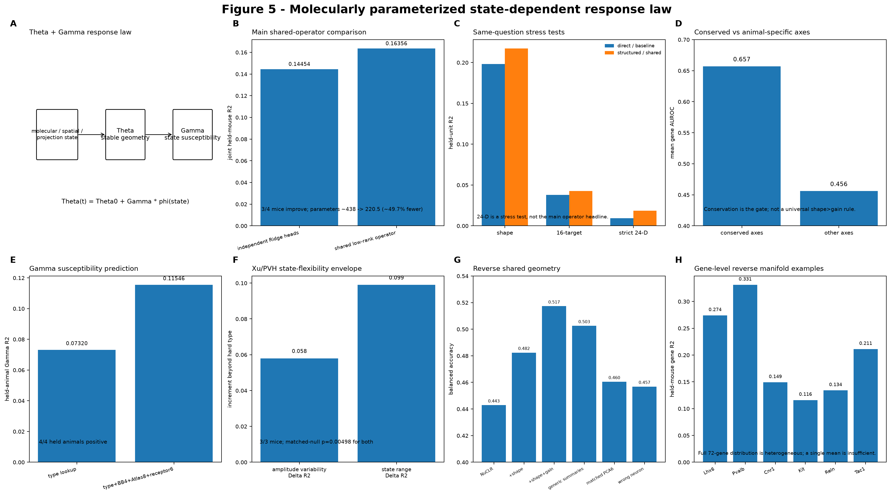
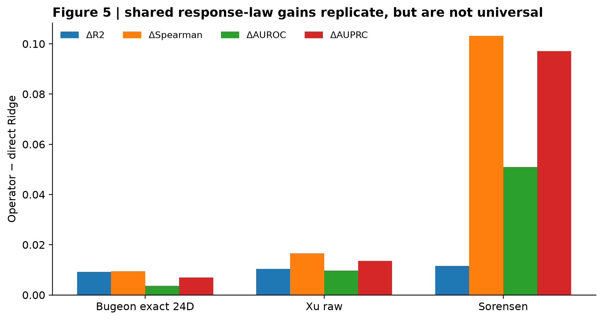
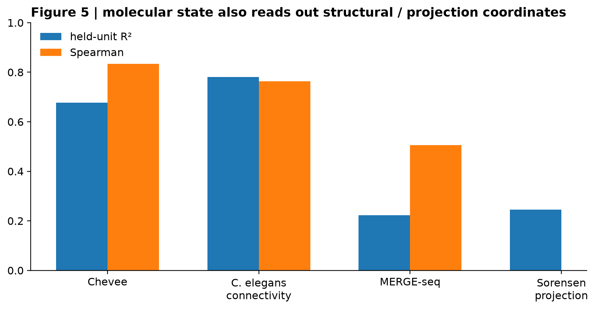
Functional operator：当前完整 ledger
Fig5 全部 functional-operator 指标
| figure | dataset | stage | contract | model | metric | value | baseline_value | delta_vs_baseline | status | n_groups | notes | |||||||||||||||||||||||||||||||||||||||||||||||||||||||||||||||||||||||||||||||||||||||
|---|---|---|---|---|---|---|---|---|---|---|---|---|---|---|---|---|---|---|---|---|---|---|---|---|---|---|---|---|---|---|---|---|---|---|---|---|---|---|---|---|---|---|---|---|---|---|---|---|---|---|---|---|---|---|---|---|---|---|---|---|---|---|---|---|---|---|---|---|---|---|---|---|---|---|---|---|---|---|---|---|---|---|---|---|---|---|---|---|---|---|---|---|---|---|---|---|---|---|
| 5.000 | bugeon2022 | operator | exact_24D_state_kernel | direct_ridge | r2 | 0.009273 | 0 | BASELINE | domain=function; positive_delta_metrics=0.0/4.0 | |||||||||||||||||||||||||||||||||||||||||||||||||||||||||||||||||||||||||||||||||||||||||
| 5.000 | bugeon2022 | operator | exact_24D_state_kernel | direct_ridge | spearman | 0.1000 | 0 | BASELINE | domain=function; positive_delta_metrics=0.0/4.0 | |||||||||||||||||||||||||||||||||||||||||||||||||||||||||||||||||||||||||||||||||||||||||
| 5.000 | bugeon2022 | operator | exact_24D_state_kernel | direct_ridge | pearson | BASELINE | domain=function; positive_delta_metrics=0.0/4.0 | |||||||||||||||||||||||||||||||||||||||||||||||||||||||||||||||||||||||||||||||||||||||||||
| 5.000 | bugeon2022 | operator | exact_24D_state_kernel | direct_ridge | nrmse | 0.9945 | BASELINE | domain=function; positive_delta_metrics=0.0/4.0 | ||||||||||||||||||||||||||||||||||||||||||||||||||||||||||||||||||||||||||||||||||||||||||
| 5.000 | bugeon2022 | operator | exact_24D_state_kernel | direct_ridge | auroc | 0.5607 | 0 | BASELINE | domain=function; positive_delta_metrics=0.0/4.0 | |||||||||||||||||||||||||||||||||||||||||||||||||||||||||||||||||||||||||||||||||||||||||
| 5.000 | bugeon2022 | operator | exact_24D_state_kernel | direct_ridge | auprc | 0.5632 | 0 | BASELINE | domain=function; positive_delta_metrics=0.0/4.0 | |||||||||||||||||||||||||||||||||||||||||||||||||||||||||||||||||||||||||||||||||||||||||
| Preview: 6 of 480 rows shown here. Download the complete CSV from the figure header above. | ||||||||||||||||||||||||||||||||||||||||||||||||||||||||||||||||||||||||||||||||||||||||||||||||||
Structural / projection law authority
| dataset | role | placement | n_folds | direct_r2 | direct_spearman | direct_auroc | direct_auprc | direct_fold_r2_positive | best_shared_model | shared_delta_r2 | shared_delta_spearman | shared_delta_auroc | shared_delta_auprc | direct_support | shared_multimetric_gain | relation_index | relation_q | relation_level | relation_support |
|---|---|---|---|---|---|---|---|---|---|---|---|---|---|---|---|---|---|---|---|
| chevee2018 | STRUCTURAL_PREDICTABILITY_PLUS_IDENTITY_STRUCTURE | Main/ED | 6.000 | 0.6770 | 0.8342 | 0.9867 | 0.9866 | 1.000 | shared_fullrank | -1.11e-16 | 0 | 0 | 0 | True | False | 1.000 | 0.001996 | type_l1 | True |
| celegans_atanas2023 | STRUCTURAL_PREDICTABILITY_PLUS_IDENTITY_STRUCTURE | Main/ED | 5.000 | 0.7808 | 0.7627 | 0.9454 | 0.8899 | 1.000 | shared_fullrank | -6.477e-07 | 1.079e-05 | -1.263e-05 | -3.801e-05 | True | False | 0.0309 | 0.001996 | type_l1 | True |
| mergeseq2024 | STRUCTURAL_PREDICTABILITY | Main/ED | 4.000 | 0.2218 | 0.5059 | 0.8115 | 0.8016 | 1.000 | shared_fullrank | 0.001475 | -0.0196 | -0.002142 | -0.0002099 | True | False | 0 | 1.000 | type_l2 | False |
| sorensen2026 | STRUCTURAL_PREDICTABILITY_PLUS_SHARED_LAW | Main | 5.000 | 0.2458 | 0.3628 | 0.7074 | 0.7083 | 1.000 | shared_fullrank | 0.0245 | 0.0156 | 0.0186 | 0.0144 | True | True | 0.6667 | 0.003984 | type_l2 | True |
| huang2020_bricseq | STRUCTURAL_OPERATOR_BOUNDARY | ED boundary | 8.000 | -0.2291 | 0.1130 | 0.1250 | shared_fullrank | -0.3536 | -0.0110 | False | False | 1.000 | 1.000 | type_l1 | False |
Additional operator boundaries
| dataset | target_domain | role | direct_r2 | direct_spearman | direct_auroc | direct_fold_r2_positive | best_shared_model | shared_r2 | shared_spearman | shared_delta_r2 | shared_delta_spearman | shared_delta_auroc | shared_delta_auprc | relation_index | relation_q | interpretation |
|---|---|---|---|---|---|---|---|---|---|---|---|---|---|---|---|---|
| allen_vc2p | functional | WEAK_ABSOLUTE_FUNCTION_OPERATOR_BOUNDARY | 0.003325 | 0.1501 | 0.5966 | 0.8000 | shared_fullrank | 0.003325 | 0.1532 | 1.831e-07 | 0.003059 | 0.00246 | 0.002108 | Molecular panel carries weak multivariate rank/AUC information, but pooled variance explained is near zero; specific Fig4 completion remains the stronger Allen VC2P claim. | ||
| flicre2020 | functional | LOW_DIMENSIONAL_FUNCTION_PREDICTABILITY_NO_SHARED_GAIN | 0.0270 | 0.2315 | 1.000 | shared_fullrank | 0.0270 | 0.2315 | 0 | 0 | Genes predict the two activity-history axes weakly/moderately in rank, but shared and independent operators are identical and Fig4 conditional molecular rescue is negative. | |||||
| wang2023_cea_easifish | projection | STRUCTURAL_OPERATOR_BOUNDARY | -0.0977 | 0.0533 | 0.7231 | 0 | shared_RRR_selected | -0.006895 | 0.0188 | 0.0908 | -0.0345 | -0.0290 | -0.0401 | 0.004122 | 1.000 | RRR improves R2 relative to a worse direct baseline but absolute R2 remains negative and rank/AUC decline; relation index is null. |
| zhao2026 | projection | RANK_STRUCTURED_AMPLITUDE_POOR_PROJECTION_BOUNDARY | -0.0267 | 0.1608 | 0.6577 | 0 | shared_RRR_selected | -0.0129 | 0.2825 | 0.0138 | 0.1218 | 0.0351 | 0.0310 | 0.6667 | 0.3293 | Shared/RRR improves rank and classification metrics over independent mapping, but pooled/fold R2 remains negative and the projection relation index is not significant. |
文章角色：main、ED 与 boundaries
| dataset | placement | scientific_question | strongest_valid_result | evidence_strength | boundary_or_caveat | |||||||||||||||||||||||||||||||||||||||||||||||||||||||||||||||||||||||||||||||||||||||||||||
|---|---|---|---|---|---|---|---|---|---|---|---|---|---|---|---|---|---|---|---|---|---|---|---|---|---|---|---|---|---|---|---|---|---|---|---|---|---|---|---|---|---|---|---|---|---|---|---|---|---|---|---|---|---|---|---|---|---|---|---|---|---|---|---|---|---|---|---|---|---|---|---|---|---|---|---|---|---|---|---|---|---|---|---|---|---|---|---|---|---|---|---|---|---|---|---|---|---|---|
| allen_vc2p | Main Fig4 / ED Fig5 | Does molecular state add information about visual functional coordinates beyond other measured functions? | Fig4 reliability_nm3: conditional delta R2 +0.0612, delta Spearman +0.1184, delta AUROC +0.0780, held-unit R2 win 0.80. Fig5 full multivariate operator is much weaker: R2=0.0033, Spearman=0.150; shared delta R2=+1.831e-07. | A- Fig4; C+ Fig5 | A positive conditional missing-coordinate result does not imply that the entire 14-coordinate response law is reconstructable from 13 genes. | |||||||||||||||||||||||||||||||||||||||||||||||||||||||||||||||||||||||||||||||||||||||||||||
| allen_visual_learning_hcr | ED / tool main | Does cell identity/molecular state organize learned visual response structure? | Fig1-3 relation/panel evidence is strong; Fig4 completion is saturated; 15-gene held-mouse operator is amplitude-ready (R2 about 0.156, Spearman about 0.357, AUROC about 0.742); Fig7 produces 44,133 perturbation-context conditions across 23 contexts. HCR-to-Zhao visual-evoked transfer is negative on target evaluation. | A for tool lineage; B+ native biological breadth | Fig4 is not a BehLift positive; Fig6 visual-evoked transfer to Zhao is a negative boundary; Fig7 is prospective ranking only. | |||||||||||||||||||||||||||||||||||||||||||||||||||||||||||||||||||||||||||||||||||||||||||||
| barseq2_2021 | Supplement / tool breadth | Can GAP handle a single structural endpoint without incorrectly requiring a multi-target operator? | held-session Ridge: R² 0.0192, Spearman 0.2649, AUROC 0.6476; public single-target projection_map now executes. | C+ | only one projection target and 3 genes; not evidence for shared operator | |||||||||||||||||||||||||||||||||||||||||||||||||||||||||||||||||||||||||||||||||||||||||||||
| barseq2_pooled_2021 | Supplement / QA | Does pooled preprocessing preserve structural mapping? | derived/pooled version of BARseq2; do not count as a second dataset. | same biological source as BARseq2 | ||||||||||||||||||||||||||||||||||||||||||||||||||||||||||||||||||||||||||||||||||||||||||||||
| bugeon2022 | Main | Can a shared molecularly organized response law outperform independent coordinate prediction? | exact 24D structured GAP R² 0.00927→0.01852; ΔSpearman +0.00944; ΔAUROC +0.00368; ΔAUPRC +0.00691; 4/4 held mice R² and AUROC wins. SIXTASK lowrank ΔR² +0.0190 with 49.7% parameter reduction. | A+ | do not confuse with frozen foundation-forward test where raw genes outperform latent | |||||||||||||||||||||||||||||||||||||||||||||||||||||||||||||||||||||||||||||||||||||||||||||
| bugeon2022_dynamic | ED | Which Bugeon response representation best exposes state/visual law? | derived from Bugeon2022; adds temporal/visual contract but not independent N. | B | must not be counted as independent replication | |||||||||||||||||||||||||||||||||||||||||||||||||||||||||||||||||||||||||||||||||||||||||||||
| Preview: 6 of 18 rows shown here. Download the complete CSV from the figure header above. | ||||||||||||||||||||||||||||||||||||||||||||||||||||||||||||||||||||||||||||||||||||||||||||||||||
图6 — 选择性复用、标签效率与跨物种保守性
把 strict zero-shot、few-shot、matched representation、机制消融和进化几何作为不同的证据 contract。
当 semantic axis 与 molecular geometry 对齐时，选出的 molecular-functional programs 可以迁移；same-species 与 mouse→fish/human 提供目前最强的 frozen evidence。
不主张 universal foundation replacement。失败的 HCR→Zhao transfer、较弱的 native-dataset foundation-forward tests，以及 anatomy/provenance exclusions 都继续作为证据的一部分。
图与结果
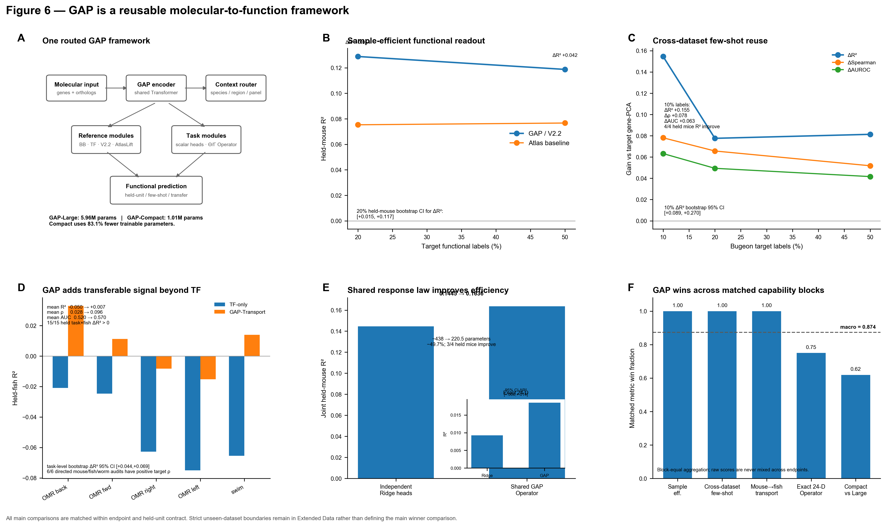
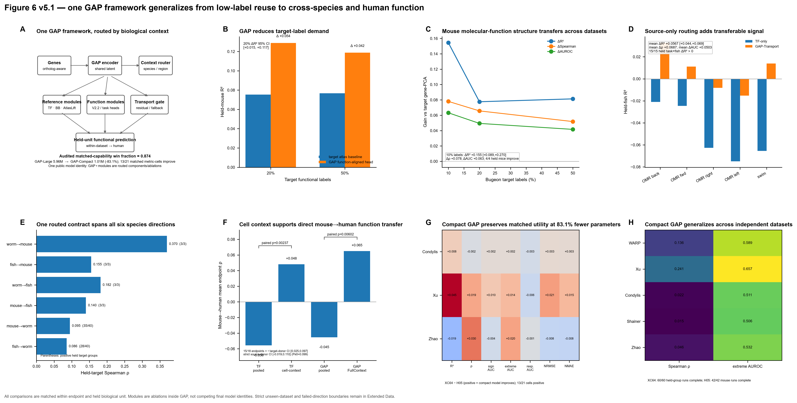
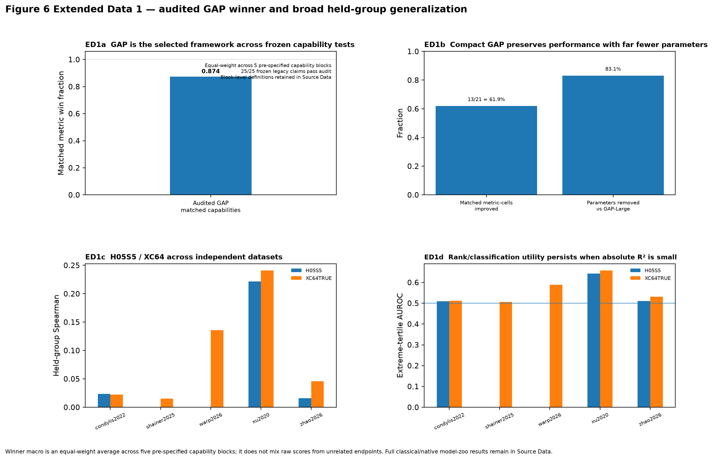
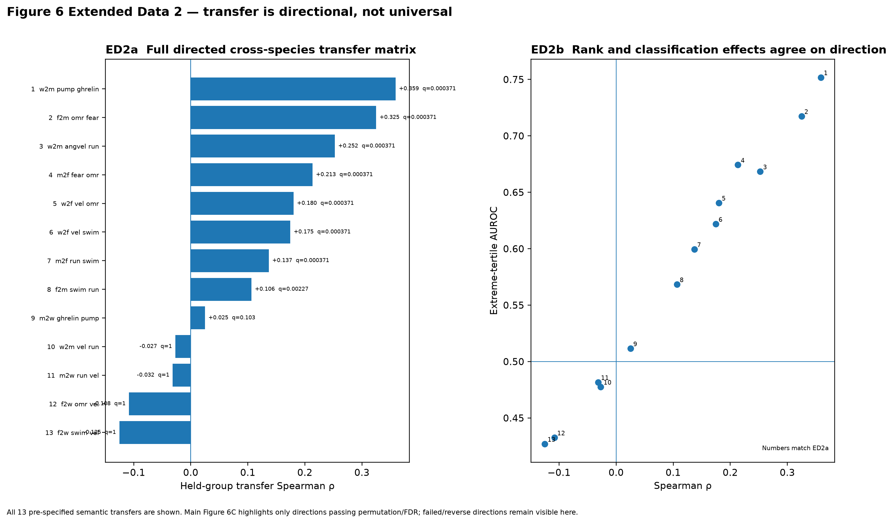
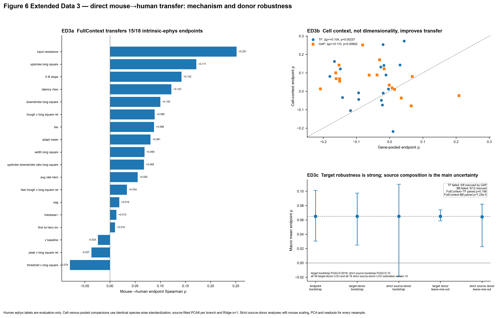
文章角色与 transfer contracts
| dataset | placement | scientific_question | strongest_valid_result | evidence_strength | held_unit_support | boundary_or_caveat | ||||||||||||||||||||||||||||||||||||||||||||||||||||||||||||||||||||||||||||||||||||||||||||
|---|---|---|---|---|---|---|---|---|---|---|---|---|---|---|---|---|---|---|---|---|---|---|---|---|---|---|---|---|---|---|---|---|---|---|---|---|---|---|---|---|---|---|---|---|---|---|---|---|---|---|---|---|---|---|---|---|---|---|---|---|---|---|---|---|---|---|---|---|---|---|---|---|---|---|---|---|---|---|---|---|---|---|---|---|---|---|---|---|---|---|---|---|---|---|---|---|---|---|
| allen_visual_learning_hcr | ED / tool main | Does cell identity/molecular state organize learned visual response structure? | Fig1-3 relation/panel evidence is strong; Fig4 completion is saturated; 15-gene held-mouse operator is amplitude-ready (R2 about 0.156, Spearman about 0.357, AUROC about 0.742); Fig7 produces 44,133 perturbation-context conditions across 23 contexts. HCR-to-Zhao visual-evoked transfer is negative on target evaluation. | A for tool lineage; B+ native biological breadth | 6 mice | Fig4 is not a BehLift positive; Fig6 visual-evoked transfer to Zhao is a negative boundary; Fig7 is prospective ranking only. | ||||||||||||||||||||||||||||||||||||||||||||||||||||||||||||||||||||||||||||||||||||||||||||
| bugeon2022 | Main | Can a shared molecularly organized response law outperform independent coordinate prediction? | exact 24D structured GAP R² 0.00927→0.01852; ΔSpearman +0.00944; ΔAUROC +0.00368; ΔAUPRC +0.00691; 4/4 held mice R² and AUROC wins. SIXTASK lowrank ΔR² +0.0190 with 49.7% parameter reduction. | A+ | 4 mice | do not confuse with frozen foundation-forward test where raw genes outperform latent | ||||||||||||||||||||||||||||||||||||||||||||||||||||||||||||||||||||||||||||||||||||||||||||
| campariseq2026 | Supplement / boundary | Can molecular state predict the one available activity-history target under held-fish validation? | single target; current held-group model-zoo does not provide stable predictive evidence. Fig4 completion is correctly N/A after capability hardening. | C | 4 fish | one target means no BehLift/manifold completion; older huge negative R² values arose from variance-degenerate folds and should not headline | ||||||||||||||||||||||||||||||||||||||||||||||||||||||||||||||||||||||||||||||||||||||||||||
| celegans_atanas2023 | Main | Does molecular identity reconstruct functional manifolds, complete missing behavior, organize connectivity, and transfer across species? | Function: strong manifold and pumping completion. Structural: Projection/connectivity Direct held-unit R2=0.781, Spearman=0.763; best shared=shared_fullrank, delta R2=-0.0000, delta Spearman=+0.0000; relation CI=0.031, q=0.001996. | A+ | 40 animals | Connectivity is highly molecularly predictable, but shared structural operator adds essentially zero; this is an equal-performance boundary, not a failure. | ||||||||||||||||||||||||||||||||||||||||||||||||||||||||||||||||||||||||||||||||||||||||||||
| photseq2019 | ED | Should a molecular dataset be forced into VISp foundation transfer? | No: tissue is vomeronasal sensory epithelium, not VISp; explicit exclusion retained. | B | 17 animals | wrong-anatomy inclusion would create a false transfer test | ||||||||||||||||||||||||||||||||||||||||||||||||||||||||||||||||||||||||||||||||||||||||||||
| shainer2025 | ED | When does anatomy/spatial position carry more function than a sparse molecular panel? | space Spearman ~0.261; BehLift increment only ~0.001; manifold/AtlasLift effects weak or mixed; native classical prediction can outperform foundation. | B | 6 fish | sparse 9-gene panel; do not force operator/foundation win | ||||||||||||||||||||||||||||||||||||||||||||||||||||||||||||||||||||||||||||||||||||||||||||
| Preview: 6 of 11 rows shown here. Download the complete CSV from the figure header above. | ||||||||||||||||||||||||||||||||||||||||||||||||||||||||||||||||||||||||||||||||||||||||||||||||||
Frozen authority
图7 — Perturb-GAP 的前瞻性实验设计
把分布式分子扰动响应投影到冻结的 response-law 模型中，选择最具选择性、最能证伪模型或最能区分 context 的实验。
Whole-brain Perturb-seq 显示 context×perturbation interaction 主导 projected functional effects（85.48%），因此前瞻实验应具有明确的 context specificity。
这只是实验提名，不是因果证明。Missing-edge prediction 仍然较弱，而且目前还没有真实 perturbation 完成因果闭环。
图与结果
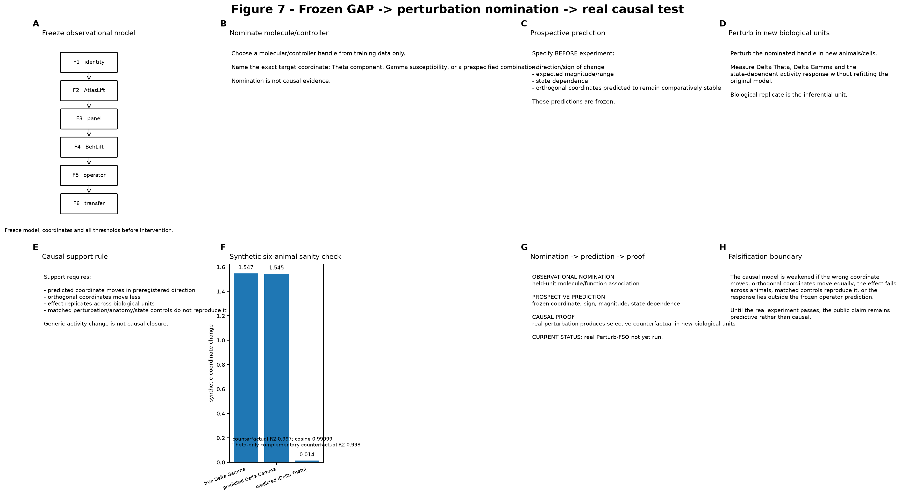
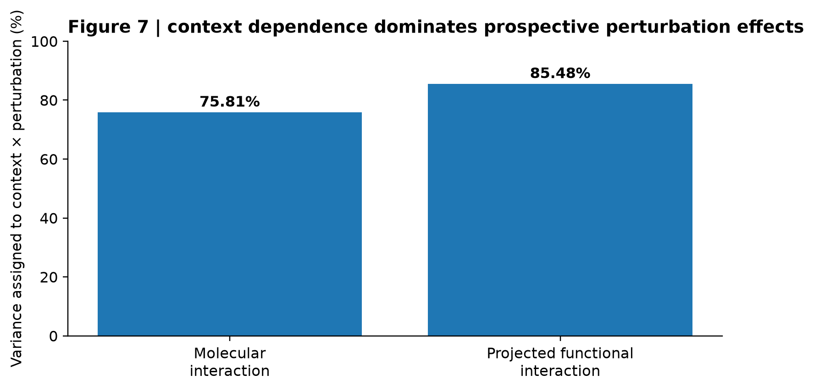
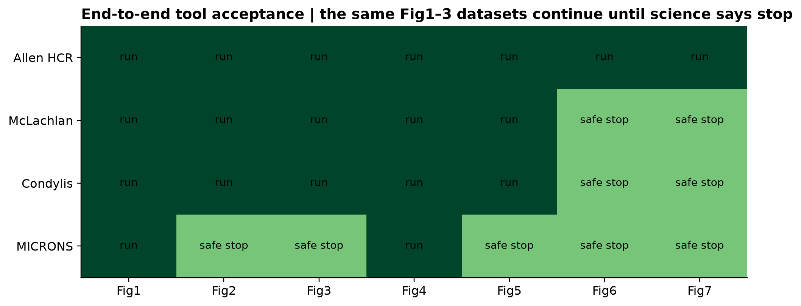
三类前瞻性实验
State-running：Syn2 / Nlgn2 / Sec23a；Speed：Myo6 / Apc / Cntnap2；Pupil：Ift43 / Slc7a14 / Klf13；Self-memory：Rest / Atp6v1a / Ppargc1b。
L4-5 IT CTX Glut 中 Htr3a：cosine -0.911；Pvalb Gaba 中 Cck：cosine -0.784；target-only 与 network-aware prediction 明显不一致。
Notch4 在 Pvalb vs MB Glut 间 cosine=-0.974；Gprc5b 与 Pax7 也呈现类似 discordance。
Dataset / article role
| dataset | placement | scientific_question | strongest_valid_result | boundary_or_caveat |
|---|---|---|---|---|
| allen_visual_learning_hcr | ED / tool main | Does cell identity/molecular state organize learned visual response structure? | Fig1-3 relation/panel evidence is strong; Fig4 completion is saturated; 15-gene held-mouse operator is amplitude-ready (R2 about 0.156, Spearman about 0.357, AUROC about 0.742); Fig7 produces 44,133 perturbation-context conditions across 23 contexts. HCR-to-Zhao visual-evoked transfer is negative on target evaluation. | Fig4 is not a BehLift positive; Fig6 visual-evoked transfer to Zhao is a negative boundary; Fig7 is prospective ranking only. |
| whole_brain_perturbseq | Main | Can distributed molecular perturbation responses nominate selective functional experiments? | 439 perturbations across all 23 contexts: molecular interaction 75.81%; after frozen GAP functional interaction 85.48%. Target-only vs network-aware perturbation cosine median ~−0.34. Context-discordant examples reach cosine ~−0.97. | prospective nomination only; missing-edge global R² ~0 and simple low-rank residual models fail |
Frozen Perturb-GAP authority
结果图谱 — 所有支持文章的数据集
每个数据集都有明确文章角色：主支持、独立重复、ED 扩展、边界、provenance guardrail 或工具 QA；derived alias 不计作独立重复。
数据集角色按 relevance → multimetric agreement → held-unit replication → independent-dataset value → effect size 的顺序确定。
Execution PASS 不代表 biological-positive；derived aliases 与 scoped variants 不会被计入独立重复数量。
图与结果
Complete article-role matrix
| dataset | evidence_kind | modalities | strongest_figure | article_role | placement | scientific_question | strongest_valid_result | evidence_strength | multimetric_support | held_unit_support | boundary_or_caveat | |||||||||||||||||||||||||||||||||||||||||||||||||||||||||||||||||||||||||||||||||||||||
|---|---|---|---|---|---|---|---|---|---|---|---|---|---|---|---|---|---|---|---|---|---|---|---|---|---|---|---|---|---|---|---|---|---|---|---|---|---|---|---|---|---|---|---|---|---|---|---|---|---|---|---|---|---|---|---|---|---|---|---|---|---|---|---|---|---|---|---|---|---|---|---|---|---|---|---|---|---|---|---|---|---|---|---|---|---|---|---|---|---|---|---|---|---|---|---|---|---|---|
| allen_vc2p | independent_dataset | genes+2P function+area | Fig4 | specific conditional-completion positive with weak full multivariate response-law boundary | Main Fig4 / ED Fig5 | Does molecular state add information about visual functional coordinates beyond other measured functions? | Fig4 reliability_nm3: conditional delta R2 +0.0612, delta Spearman +0.1184, delta AUROC +0.0780, held-unit R2 win 0.80. Fig5 full multivariate operator is much weaker: R2=0.0033, Spearman=0.150; shared delta R2=+1.831e-07. | A- Fig4; C+ Fig5 | yes for specific Fig4 coordinate; weak for global Fig5 law | 256 animals / held-animal | A positive conditional missing-coordinate result does not imply that the entire 14-coordinate response law is reconstructable from 13 genes. | |||||||||||||||||||||||||||||||||||||||||||||||||||||||||||||||||||||||||||||||||||||||
| allen_visual_learning_hcr | independent_dataset | 22 genes+2P change/omission+cell type | Fig5/Fig7 + end-to-end tool acceptance | visual-learning identity/response-law independent replication and full Fig1-to-Fig7 demonstration | ED / tool main | Does cell identity/molecular state organize learned visual response structure? | Fig1-3 relation/panel evidence is strong; Fig4 completion is saturated; 15-gene held-mouse operator is amplitude-ready (R2 about 0.156, Spearman about 0.357, AUROC about 0.742); Fig7 produces 44,133 perturbation-context conditions across 23 contexts. HCR-to-Zhao visual-evoked transfer is negative on target evaluation. | A for tool lineage; B+ native biological breadth | yes | 6 mice | Fig4 is not a BehLift positive; Fig6 visual-evoked transfer to Zhao is a negative boundary; Fig7 is prospective ranking only. | |||||||||||||||||||||||||||||||||||||||||||||||||||||||||||||||||||||||||||||||||||||||
| barseq2_2021 | independent_dataset | 3 genes+single projection endpoint | Fig5 ED | single-endpoint structural mapping breadth | Supplement / tool breadth | Can GAP handle a single structural endpoint without incorrectly requiring a multi-target operator? | held-session Ridge: R² 0.0192, Spearman 0.2649, AUROC 0.6476; public single-target projection_map now executes. | C+ | rank/AUC directional | 23 sessions | only one projection target and 3 genes; not evidence for shared operator | |||||||||||||||||||||||||||||||||||||||||||||||||||||||||||||||||||||||||||||||||||||||
| barseq2_pooled_2021 | derived_alias | pooled BARseq variant | Fig5 ED | derived pooled contract, not independent replication | Supplement / QA | Does pooled preprocessing preserve structural mapping? | derived/pooled version of BARseq2; do not count as a second dataset. | derived | same biological source as BARseq2 | |||||||||||||||||||||||||||||||||||||||||||||||||||||||||||||||||||||||||||||||||||||||||
| bugeon2022 | independent_dataset | 72 genes+state/visual function | Fig5 | primary structured response-law anchor | Main | Can a shared molecularly organized response law outperform independent coordinate prediction? | exact 24D structured GAP R² 0.00927→0.01852; ΔSpearman +0.00944; ΔAUROC +0.00368; ΔAUPRC +0.00691; 4/4 held mice R² and AUROC wins. SIXTASK lowrank ΔR² +0.0190 with 49.7% parameter reduction. | A+ | yes | 4 mice | do not confuse with frozen foundation-forward test where raw genes outperform latent | |||||||||||||||||||||||||||||||||||||||||||||||||||||||||||||||||||||||||||||||||||||||
| bugeon2022_dynamic | derived_contract | Bugeon-derived dynamic/visual response contract | Fig4/Fig5 | derived mechanistic contract | ED | Which Bugeon response representation best exposes state/visual law? | derived from Bugeon2022; adds temporal/visual contract but not independent N. | B | contract-specific | same 4 mice | must not be counted as independent replication | |||||||||||||||||||||||||||||||||||||||||||||||||||||||||||||||||||||||||||||||||||||||
| Preview: 6 of 40 rows shown here. Download the complete CSV from the figure header above. | ||||||||||||||||||||||||||||||||||||||||||||||||||||||||||||||||||||||||||||||||||||||||||||||||||
Dataset-stage coverage
| dataset | stages_applicable | stages_current_or_validated | true_gaps | gap_stages | evidence_kind | strongest_figure | article_role | placement | next_action | |||||||||||||||||||||||||||||||||||||||||||||||||||||||||||||||||||||||||||||||||||||||||
|---|---|---|---|---|---|---|---|---|---|---|---|---|---|---|---|---|---|---|---|---|---|---|---|---|---|---|---|---|---|---|---|---|---|---|---|---|---|---|---|---|---|---|---|---|---|---|---|---|---|---|---|---|---|---|---|---|---|---|---|---|---|---|---|---|---|---|---|---|---|---|---|---|---|---|---|---|---|---|---|---|---|---|---|---|---|---|---|---|---|---|---|---|---|---|---|---|---|---|
| allen_vc2p | 4.000 | 2.000 | 0 | independent_dataset | Fig4 | independent mouse functional-completion/manifold replication | Main breadth / ED | rerun AtlasLift/AtlasFlow under new row-level region scope; preserve BehLift result as primary | ||||||||||||||||||||||||||||||||||||||||||||||||||||||||||||||||||||||||||||||||||||||||||
| allen_visual_learning_hcr | 4.000 | 4.000 | 0 | independent_dataset | Fig5/Fig7 + end-to-end tool acceptance | visual-learning identity/response-law independent replication and full Fig1-to-Fig7 demonstration | ED / tool main | Use as the canonical new-dataset end-to-end demo; keep negative Zhao transfer visible. | ||||||||||||||||||||||||||||||||||||||||||||||||||||||||||||||||||||||||||||||||||||||||||
| barseq2_2021 | 2.000 | 1.000 | 0 | independent_dataset | Fig5 ED | single-endpoint structural mapping breadth | Supplement / tool breadth | retain as single-target boundary; do not count as operator replication | ||||||||||||||||||||||||||||||||||||||||||||||||||||||||||||||||||||||||||||||||||||||||||
| bugeon2022 | 4.000 | 3.000 | 0 | independent_dataset | Fig5 | primary structured response-law anchor | Main | keep as Fig5 anchor and Fig6 sample-efficiency anchor | ||||||||||||||||||||||||||||||||||||||||||||||||||||||||||||||||||||||||||||||||||||||||||
| campariseq2026 | 1.000 | 0 | 0 | independent_dataset | Boundary | single-target applicability boundary | Supplement / boundary | retain as single-target zebrafish boundary; do not force Fig4 completion | ||||||||||||||||||||||||||||||||||||||||||||||||||||||||||||||||||||||||||||||||||||||||||
| carma_vta | 0 | 0 | 0 | private/configured_dataset | Tool/ future Fig4 | native/private dataset route | Supplement / internal | run only against frozen recovery directory and add held-animal authority when configured | ||||||||||||||||||||||||||||||||||||||||||||||||||||||||||||||||||||||||||||||||||||||||||
| Preview: 6 of 32 rows shown here. Download the complete CSV from the figure header above. | ||||||||||||||||||||||||||||||||||||||||||||||||||||||||||||||||||||||||||||||||||||||||||||||||||
真正的新数据集进入后会发生什么？
公开工具首先判断文件语义，再判断科学上允许执行哪些阶段；必要证据不存在时，Blocked 本身就是有效结果。
dataset integrity / execution contracts PASS
capability checks PASS
boundary + 普通 one-command campaigns PASS
公开数据不完整时，应得到正确停止，而不是编造一个生物学结果
Direct method-level reproduction
accepted IoU matches；1149/1439=79.85% confident soma-print；median z-restricted IoU=0.286。
Three-level intake
matching/QC only → all Fig1–3 biology stages safe-stop.
aligned molecular table → 自动 canonicalize PV→Pvalb、SST→Sst；exact VISp AtlasLift 可以运行。
multi-animal molecular+function → 在 held animals 条件下开放适用的 Fig1–3 stages。
Claim boundary
The released demo does not 并不包含完整的 PBN/V1 functional biology dataset，因此 PBN response specificity 与 V1 arousal/correlation 相关结论仍然 READY WITH FULL DATA, not “reproduced.”
PBN engineering branch
96 cells = 24 个重复 local IDs × 4 animals，仍保留 96 个 scoped identities；4 个 held animals；自动选择 exact PBN reference；function-map / coordinate / fixed-budget / AIC / effect-size 均可执行；一维 response 会正确阻断 Zhao-style relation-index。
V1 paper-native pairwise branch
120 cells / 4 animals / raw aligned EASI metadata + traces。Pairwise inference 每只动物只贡献一个 slope/rank statistic：within-class median ρ=-0.812，across-class=-0.828。 Engineering fixture only.
External-readiness authority · paper-native replication contract
Fig1–3 现在是 Fig4–7 的上游证据 contract
工具执行成功不代表后续每个生物学结果都为正。Allen Visual Learning HCR 可以通过一个公开 workflow 一直运行到 Fig7，同时保留 mixed / negative gates。
| Stage | Allen HCR status | Allowed reading |
|---|---|---|
| Fig4 | SATURATION BOUNDARY | molecular completion is mixed; do not force rescue |
| Fig5 | ABSOLUTE SUPPORT | held-mouse operator predicts, but does not robustly beat every independent Ridge comparator |
| Fig6 | NEGATIVE TRANSFER | Allen-HCR→Zhao target transfer is negative; no conservation claim |
| Fig7 | GATED EXECUTION | nomination proceeds only after an independent held-mouse operator gate |
页面上的每个数字都有来源和 claim level
Historical figures
旧版 v3 requirement-aligned graphics 继续保留用于 provenance，但在 2026-10-04 refresh 后已不再是网页端 authority。